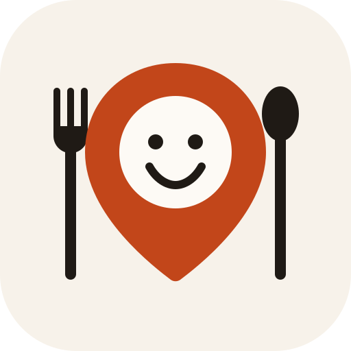
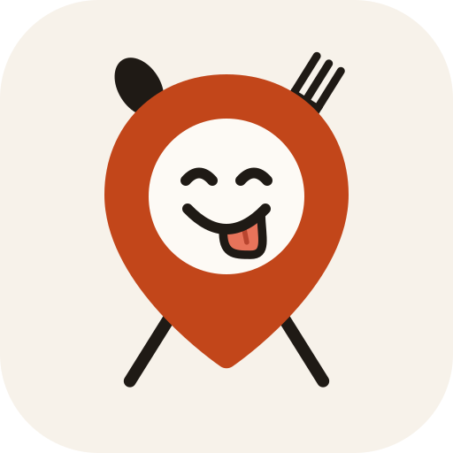

고르신 B(얼굴 핀)를 바탕으로 혀와 식기를 더했어요. 큰 그림, 작은 크기, 홈 화면 순서예요
기분 좋게 눈을 감고, 입 가로 70% 지점에서 혀가 살짝 늘어진 얼굴. 식기 없이도 "맛있겠다"가 바로 읽히고, 작은 크기에서 가장 깔끔해요
핀 양옆에 포크와 숟가락을 세웠어요. 음식 앱이라는 게 가장 직접적으로 보이지만, 작은 크기에서는 식기가 가늘어져요

핀 뒤로 포크와 숟가락을 X자로 걸치고, 얼굴은 혀를 내밀어 입맛을 다셔요. 둘을 다 담아 가장 "먹을 거야" 느낌이 강해요
